ELLA - Equip Diffusion Models with LLM for Enhanced Semantic Alignment
In the realm of text-to-image generation, diffusion models have emerged as a powerful force, captivating the imagination of researchers and enthusiasts alike. However, despite their remarkable capabilities, these models still face challenges in comprehending dense prompts that encompass multiple objects, detailed attributes, and complex relationships. To address this limitation, an approach called ELLA (Efficient Large Language Model Adapter) is introduced by Xiwei Hu*, Rui Wang*, Yixiao Fang*, Bin Fu*, Pei Cheng, Gang Yu✦ , which equips text-to-image diffusion models with the prowess of Large Language Models (LLMs) to enhance text alignment without training of either U-Net or LLM.
https://github.com/TencentQQGYLab/ELLA/
The architecture of ELLA, as illustrated in the figure below from the paper, consists of a pre-trained LLM, such as T5, TinyLlama, or LLaMA-2, serving as the text encoder, and a Timestep-Aware Semantic Connector (TSC) that interacts with the text features to facilitate improved semantic conditioning during the diffusion process. This design allows for the extraction of dynamic text features at various denoising stages, effectively conditioning the frozen U-Net at distinct semantic levels.
To facilitate TSC in dense information comprehension, ELLA employs a dataset rich in information density, constructed by synthesizing highly informative text-image pair captions using state-of-the-art Multi-modal Language Language Models (MLLM). Once trained, TSC can seamlessly integrate with community models and downstream tools, such as LoRA and ControlNet, to improve their text-image alignment capabilities.
the architecture that followes all the changes is actually pretty neat and simple
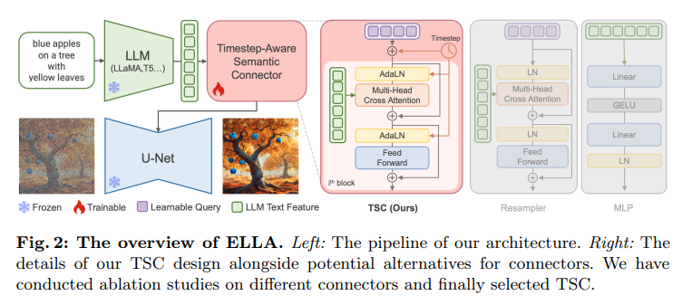Now, let's delve into the technical aspects of ELLA. The core of ELLA lies in the Timestep-Aware Semantic Connector (TSC), which is designed to extract timestep-dependent conditions from the pre-trained LLM at various denoising stages. The architecture of TSC is based on the resampler, and it instills temporal dependency by integrating the timestep in the Adaptive Layer Normalization. This design allows TSC to adapt semantics features over sampling time steps, effectively conditioning the frozen U-Net at distinct semantic levels.
In terms of LLM selection,the authors conducted experiments with 1B T5-XL encoder, 1.1B TinyLlama, and 13B LLaMA-2 on the SD v1.5. the 1.2B T5-XL encoder shows significant advantages in short prompts interpretation while falling short of LLaMA-2 13B in comprehending complex texts. This observation suggests that encoder models with bidirectional attention capabilities may capture richer text features, thereby providing more effective conditioning for image generation.
In conclusion, ELLA equipping diffusion models with the power of Large Language Models to better comprehend dense prompts and generate high-fidelity images that accurately reflect the given text is great. The Timestep-Aware Semantic Connector (TSC) plays a crucial role in this process, effectively conditioning the frozen U-Net at distinct semantic levels. As the technology continues to evolve, we can expect even more impressive advancements in the realm of text-to-image synthesis, driven by the synergy between diffusion models and Large Language Models.
Here are some experiments from my test runs
(vanilla SD15 (epic-realism and dark-sushi in some cases) | ELLA - fixed length | ELLA - flexible max length)
 A serene canine amidst tall grass, a red collar contrasting its black fur, gazing into a stormy sky.
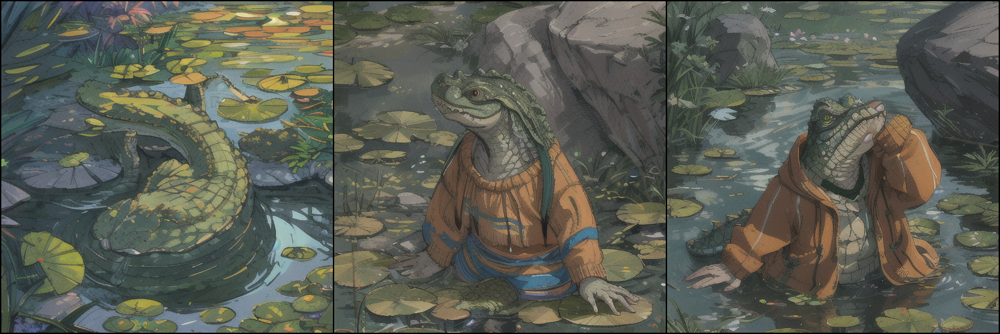
Crocodile in a sweater
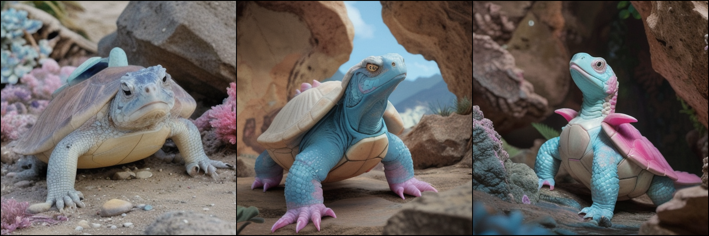
A fantastical white turtle-lizard with a blue and pink shell, in a rocky habitat.
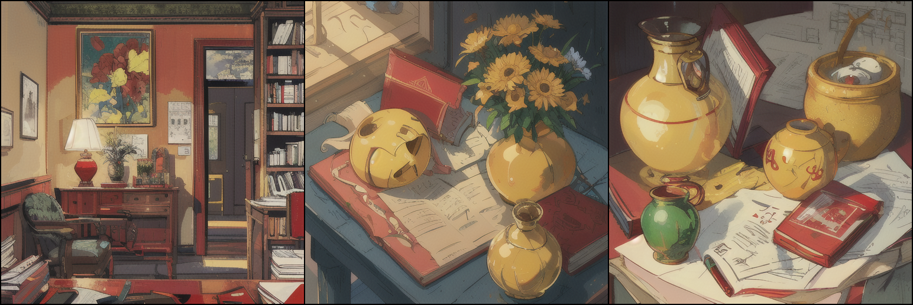
A red book and a yellow vase.
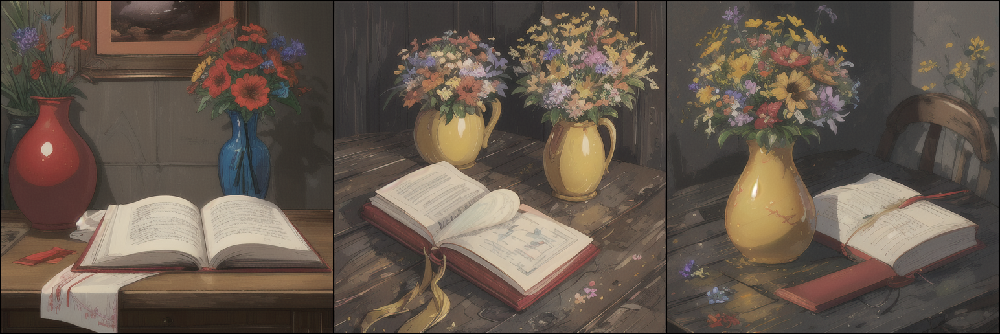
A vivid red book with a smooth, matte cover lies next to a glossy yellow vase. The vase, with a slightly curved silhouette, stands on a dark wood table with a noticeable grain pattern. The book appears slightly worn at the edges, suggesting frequent use, while the vase holds a fresh array of multicolored wildflowers.
An ethereal, inviting glass sanctuary beneath the Northern Lights.
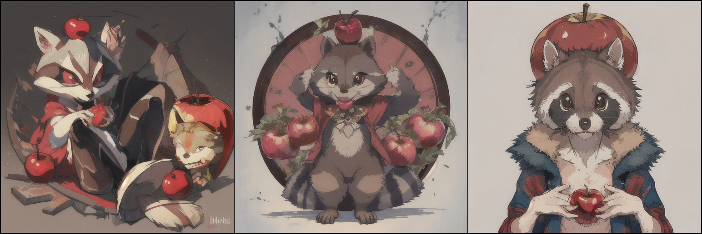
a racoon holding a shiny red apple over its head
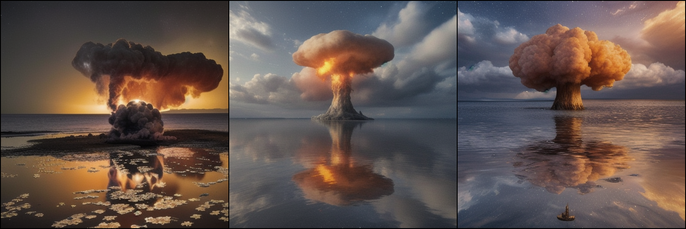
An ominous, post-apocalyptic vision: Orange mushroom cloud over water, reflecting a starry sky.
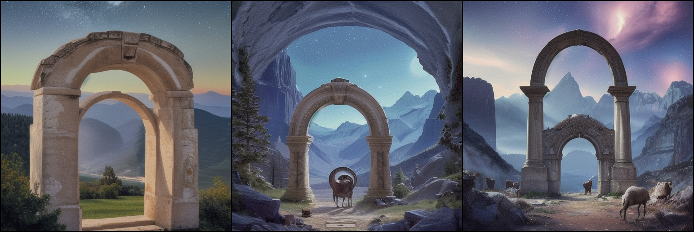
An ethereal, starry vista with a majestic archway, ram's head, and serene mountainscape.
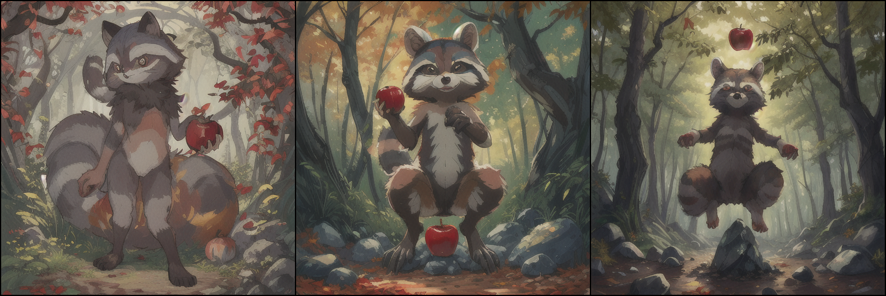
a mischievous raccoon standing on its hind legs, holding a bright red apple aloft in its furry paws. the apple shines brightly against the backdrop of a dense forest, with leaves rustling in the gentle breeze. a few scattered rocks can be seen on the ground beneath the raccoon's feet, while a gnarled tree trunk stands nearby.
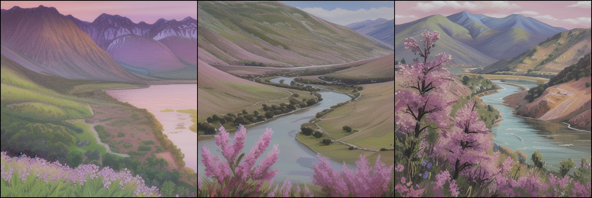
An idyllic pink hued An idyllic pink hued landscape painting: Mountain range, river, green valley, purple flowers.: Mountain range, river, green valley, purple flowers.
A serene canine amidst tall grass, a red collar contrasting its black fur, gazing into a stormy sky.
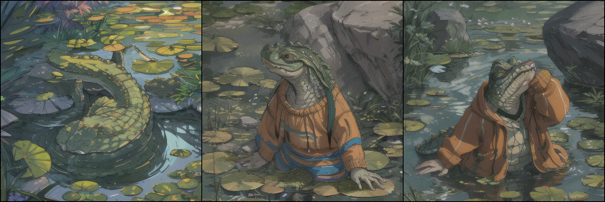
Crocodile in a sweater
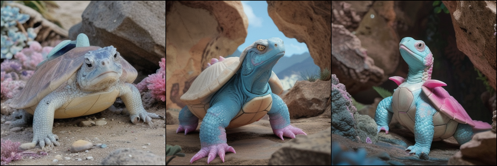
A fantastical white turtle-lizard with a blue and pink shell, in a rocky habitat.
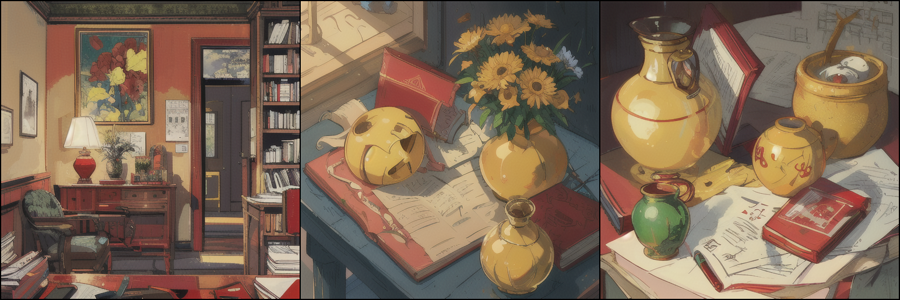
A red book and a yellow vase.
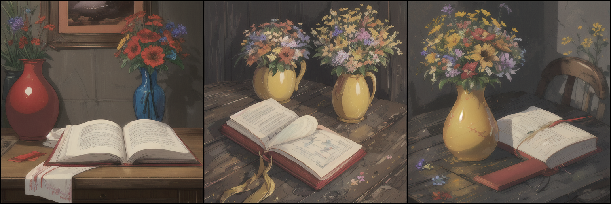
A vivid red book with a smooth, matte cover lies next to a glossy yellow vase. The vase, with a slightly curved silhouette, stands on a dark wood table with a noticeable grain pattern. The book appears slightly worn at the edges, suggesting frequent use, while the vase holds a fresh array of multicolored wildflowers.
An ethereal, inviting glass sanctuary beneath the Northern Lights.
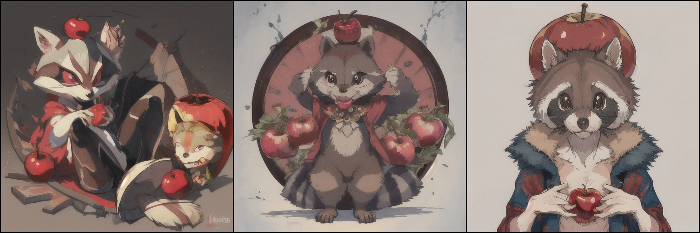
a racoon holding a shiny red apple over its head
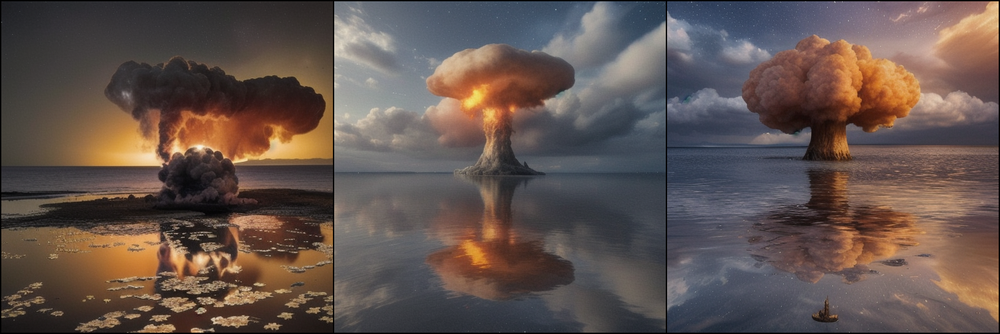
An ominous, post-apocalyptic vision: Orange mushroom cloud over water, reflecting a starry sky.
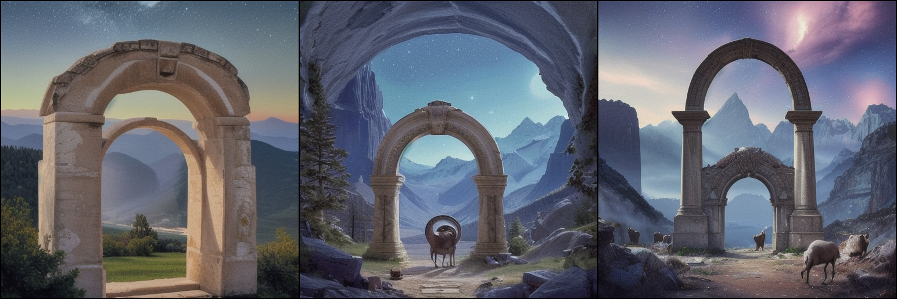
An ethereal, starry vista with a majestic archway, ram's head, and serene mountainscape.
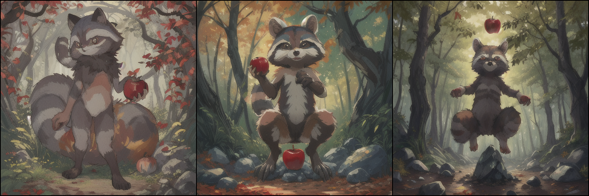
a mischievous raccoon standing on its hind legs, holding a bright red apple aloft in its furry paws. the apple shines brightly against the backdrop of a dense forest, with leaves rustling in the gentle breeze. a few scattered rocks can be seen on the ground beneath the raccoon's feet, while a gnarled tree trunk stands nearby.
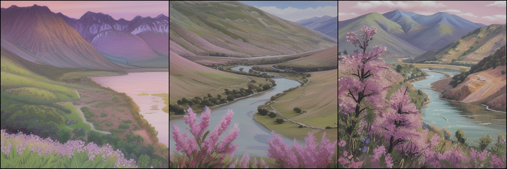
An idyllic pink hued An idyllic pink hued landscape painting: Mountain range, river, green valley, purple flowers.: Mountain range, river, green valley, purple flowers.
Now Here comes the intresting part right now it's just SD15 trained and realistically SDXL models are way better then SD15 based models and in I think the authors are working on training a version for SDXLs as well
until then I made ELLA part of a totally independent project (fork) from HuggingFace diffusers called Diffusers++ which is basically for diffusers community pipelines but maintained,
its still a little messy with little to no structure but here's a minimal PR https://github.com/ModelsLab/diffusers_plus_plus/pull/4 that integrates ELLA with DIffusers++, migrates to newer phi3 which basically uses llama2 tokenizer and write a training script in order to train this for SDXL based models.
All of this does not represent the views of the authors